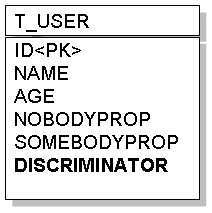
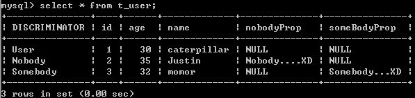

接續 Table per Concrete Class，來看看繼承關係映射至關聯式資料庫 的第二種方式：Single Table Class Hierarchy。這種方式使用一個表格儲存同一個繼承階層的所有類別，並使用額外的欄位來表示所記錄的是哪一個子類別的資料。
具體來說，對於繼承User類別的Nobody及Somebody，可以設計以下的表格來儲存資料：

現在所決定的是，如果要儲存的資料是來自Nobody，則在DISCRIMINATOR記下一個型態說明，例如"Nobody"字串，表示該筆資料為Nobody實體的對應資料。如果要儲存的資料是來自Somebody，則在DISCRIMINATOR記下一個型態說明，例如"Somebody"字串，表示該筆資料為Somebody實體的對應資料。如果要儲存的資料是來自User，則在DISCRIMINATOR記下一個型態說明，例如"User"字串，表示該筆資料為User實體的對應資料。
在實體類別上，則可以使用InheritanceType.SINGLE_TABLE來設定@Inheritance的strategy（事實上，InheritanceType.SINGLE_TABLE是預設值），並使用@DiscriminatorColumn與@DiscriminatorValue來設定區別類型欄位的名稱與儲存值。
例如，User類別可以如下設計：
- User.java
package onlyfun.caterpillar;
import java.io.Serializable;
import javax.persistence.DiscriminatorColumn;
import javax.persistence.DiscriminatorType;
import javax.persistence.DiscriminatorValue;
import javax.persistence.Entity;
import javax.persistence.GeneratedValue;
import javax.persistence.GenerationType;
import javax.persistence.Id;
import javax.persistence.Inheritance;
import javax.persistence.InheritanceType;
import javax.persistence.Table;
@Entity
@Table(name="T_USER")
@Inheritance(strategy=InheritanceType.SINGLE_TABLE)
@DiscriminatorColumn(name="DISCRIMINATOR",
discriminatorType=DiscriminatorType.STRING)
@DiscriminatorValue("User") // 預設即是類別名稱
public class User implements Serializable {
@Id
@GeneratedValue(strategy = GenerationType.AUTO)
private Long id;
private String name;
private Long age;
public Long getAge() { return age; }
public void setAge(Long age) { this.age = age; }
public Long getId() { return id; }
public void setId(Long id) { this.id = id; }
public String getName() { return name; }
public void setName(String name) { this.name = name; }
}其中@DiscriminatorValue預設會使用類別名稱，您也可以改用其它的名或名稱，而Nobody與Somebody類別可如下設計：
- Nobody.java
package onlyfun.caterpillar;
import javax.persistence.DiscriminatorValue;
import javax.persistence.Entity;
@Entity
@DiscriminatorValue("Nobody") // 預設即是類別名稱
public class Nobody extends User {
private String nobodyProp;
public String getNobodyProp() {
return nobodyProp;
}
public void setNobodyProp(String nobodyProp) {
this.nobodyProp = nobodyProp;
}
}- Somebody.java
package onlyfun.caterpillar;
import javax.persistence.DiscriminatorValue;
import javax.persistence.Entity;
@Entity
@DiscriminatorValue("Somebody") // 預設即是類別名稱
public class Somebody extends User {
private String someBodyProp;
public String getSomeBodyProp() {
return someBodyProp;
}
public void setSomeBodyProp(String someBodyProp) {
this.someBodyProp = someBodyProp;
}
}同樣記得，在persistence.xml中，要增加這三個類別的<class>標籤，以載入實體類別資訊。
假設您分別儲存了User、Nobody與Somebody實例，則一個MySQL資料庫中的表格狀態如下所示：

缺點就是，因子類別屬性的不同，對映儲存時會有許多欄位為NULL，較浪費資料庫空間，但查詢效率較好，例如查詢User類型的資料時，只需一次SQL，例如這段程式碼：
Query query = entityManager.createQuery("SELECT user FROM User user");
Iterator users = query.getResultList().iterator();
while(users.hasNext()) {
user = (User) users.next();
System.out.printf("%d\t%s\t%d\n",
user.getId(),
user.getName(),
user.getAge());
}
只會下一次的SQL語句，例如若是Hibernate作為JPA的實作，它會產生以下的SQL語句：
select
user0_.id as id0_,
user0_.age as age0_,
user0_.name as name0_,
user0_.nobodyProp as nobodyProp0_,
user0_.someBodyProp as someBody6_0_,
user0_.DISCRIMINATOR as DISCRIMI1_0_
from
T_USER user0_
如果是查詢個別子類型資料，則會以WHERE子句比對DISCRIMINATOR型態，例如：
Query query = entityManager.createQuery("SELECT nobody FROM Nobody nobody");
在Hibernate作為JPA的實作時，會產生以下的SQL語句：
select
nobody0_.id as id0_,
nobody0_.age as age0_,
nobody0_.name as name0_,
nobody0_.nobodyProp as nobodyProp0_
from
T_USER nobody0_
where
nobody0_.DISCRIMINATOR='Nobody'